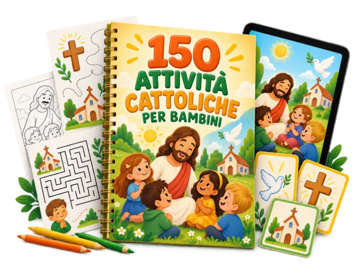
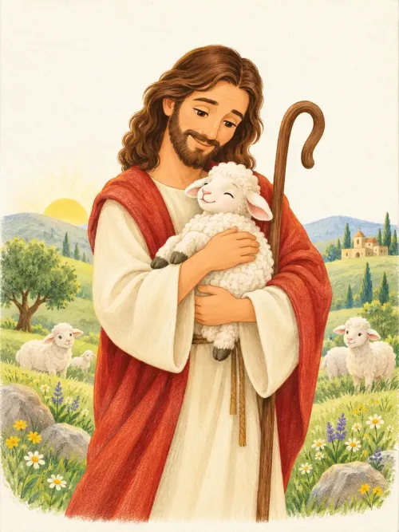
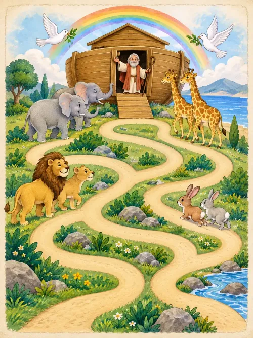
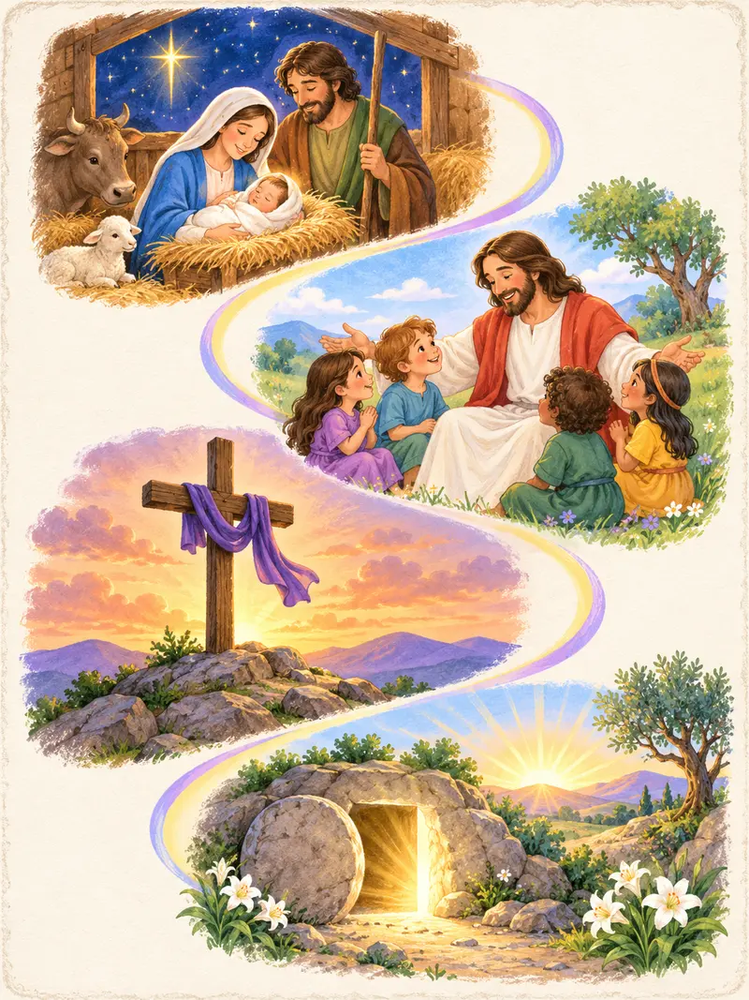
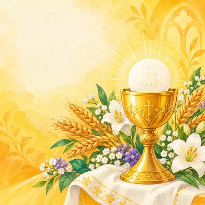
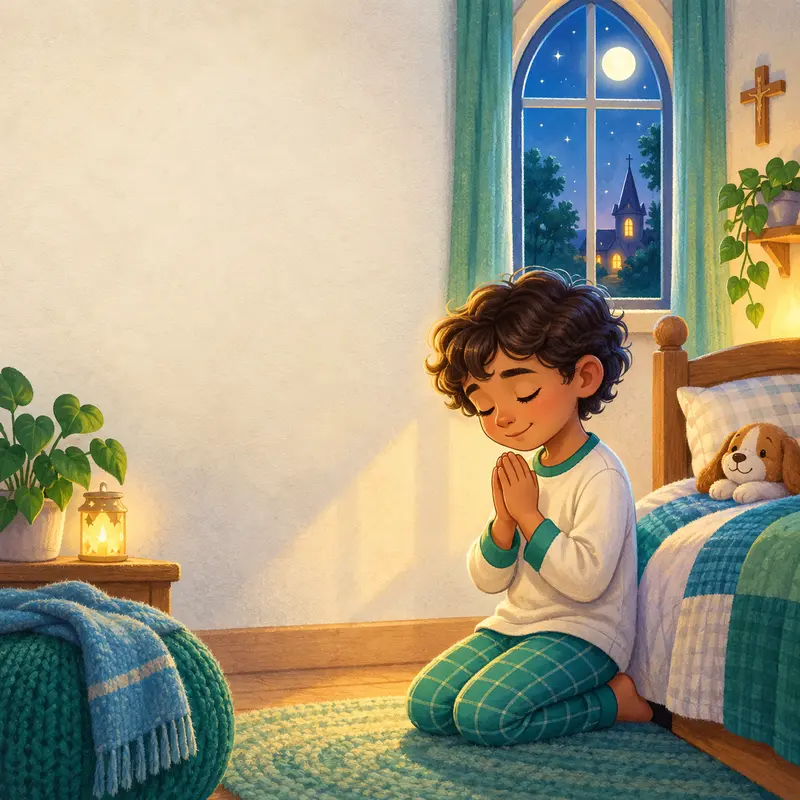
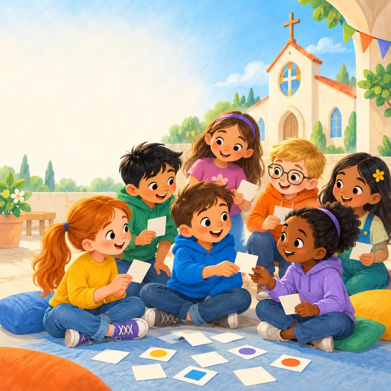
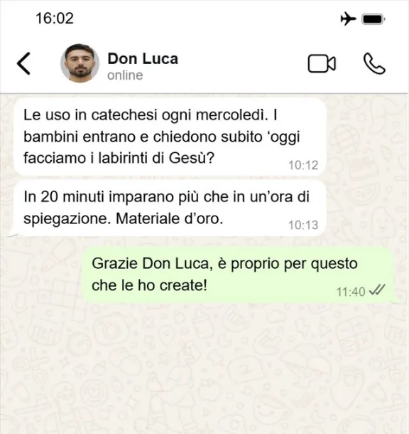
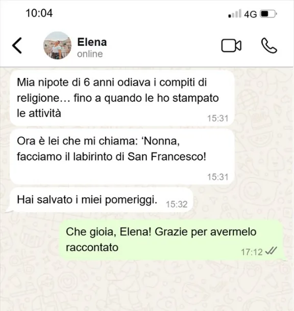

⌛
Poco tempo per preparare?
Apri il file, scegli l'attività e stampa. È tutto pronto, senza ore di ricerca.
Giochi, disegni e attività educative già pronte da stampare per far conoscere Gesù ai bambini in modo semplice e divertente.
SCOPRI L'OFFERTA → Accesso immediato • Stampa tutte le volte che vuoi
Apri il file, scegli l'attività e stampa. È tutto pronto, senza ore di ricerca.
Giochi e sfide trasformano ogni insegnamento in un'esperienza coinvolgente.
Valori cristiani spiegati con parole, immagini e attività adatte alla loro età.
Attività illustrate sui momenti più importanti della vita di Gesù.
Labirinti, quiz, enigmi, memory e sfide da risolvere divertendosi.
Scene cattoliche curate, semplici e piacevoli da personalizzare.
Avvento, Natale, Quaresima e Pasqua spiegati in modo creativo.
File PDF organizzati per tema, perfetti a casa o al catechismo.
Scarica una volta e ristampa le attività ogni volta che ne hai bisogno.

COLORA E IMPARA
TROVA LA STRADA
COMPLETA LA STORIAUna piccola anteprima delle 150 attività incluse
Risorse extra per accompagnare i bambini nei momenti più importanti dell'anno.
Valore reale €33,50 — incluso GRATIS nella versione Premium

BONUS 01PRIMAPercorso illustrato con attività e riflessioni.
24 giorni di piccole missioni di fede.

BONUS 03LE MIE30 carte illustrate da ritagliare e conservare.
Una settimana speciale per vivere la Risurrezione.

BONUS 05GIOCHI PERIdee rapide per famiglie, catechisti e parrocchie.
Messaggi ricevuti da chi ha già portato le attività a casa, in parrocchia e al catechismo.


ESSENZIALE
da €19,90
pagamento unico
PREMIUM
da €44,90
pagamento unico
PER LE FAMIGLIETrasforma un pomeriggio o la domenica in un momento speciale da vivere insieme, con attività semplici da seguire.
PER I CATECHISTIPrepara l'incontro in pochi minuti scegliendo il tema giusto, senza dover cercare e adattare materiali ogni settimana.
PER I BAMBINIImpara attraverso il gioco, il colore e la scoperta con proposte pensate per mantenere viva la curiosità.
Scarica il materiale, esplora le attività e scopri quanto può essere semplice parlare di fede con i bambini. Se non è ciò che cercavi, contattaci entro 7 giorni.
Subito dopo il pagamento riceverai l'accesso ai file digitali in PDF, pronti da scaricare e stampare.
No. È un prodotto 100% digitale: non riceverai alcun materiale fisico.
Le attività sono state pensate soprattutto per bambini dai 6 ai 10 anni, con diversi livelli di difficoltà.
Sì. Sono ideali per famiglie, catechisti, educatori e gruppi parrocchiali.
Sì. Potrai ristampare le attività ogni volta che vorrai per uso personale o nel tuo gruppo.